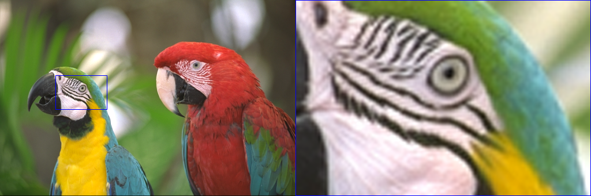

| Safe Haskell | None |
|---|---|
| Language | Haskell2010 |
OpenCV.Core.Types.Mat
- data Mat shape channels depth
- type family MatShape (a :: *) :: DS [DS Nat]
- type family MatChannels (a :: *) :: DS Nat
- type family MatDepth (a :: *) :: DS *
- class ToMat a where
- class FromMat a where
- typeCheckMat :: forall shape channels depth. (ToShapeDS (Proxy shape), ToChannelsDS (Proxy channels), ToDepthDS (Proxy depth)) => Mat shape channels depth -> [CoerceMatError]
- relaxMat :: (MayRelax shapeIn shapeOut, MayRelax channelsIn channelsOut, MayRelax depthIn depthOut) => Mat shapeIn channelsIn depthIn -> Mat shapeOut channelsOut depthOut
- coerceMat :: (ToShapeDS (Proxy shapeOut), ToChannelsDS (Proxy channelsOut), ToDepthDS (Proxy depthOut)) => Mat shapeIn channelsIn depthIn -> CvExcept (Mat shapeOut channelsOut depthOut)
- emptyMat :: Mat (S '[]) (S 1) (S Word8)
- mkMat :: (ToShape shape, ToChannels channels, ToDepth depth, ToScalar scalar) => shape -> channels -> depth -> scalar -> CvExcept (Mat (ShapeT shape) (ChannelsT channels) (DepthT depth))
- eyeMat :: (ToInt32 height, ToInt32 width, ToChannels channels, ToDepth depth) => height -> width -> channels -> depth -> Mat (ShapeT (height ::: (width ::: Z))) (ChannelsT channels) (DepthT depth)
- cloneMat :: Mat shape channels depth -> Mat shape channels depth
- matSubRect :: Mat (S '[height, width]) channels depth -> Rect2i -> CvExcept (Mat (S '[D, D]) channels depth)
- matCopyTo :: Mat (S '[dstHeight, dstWidth]) channels depth -> V2 Int32 -> Mat (S '[srcHeight, srcWidth]) channels depth -> Maybe (Mat (S '[srcHeight, srcWidth]) (S 1) (S Word8)) -> CvExcept (Mat (S '[dstHeight, dstWidth]) channels depth)
- matConvertTo :: forall shape channels srcDepth dstDepth. ToDepthDS (Proxy dstDepth) => Maybe Double -> Maybe Double -> Mat shape channels srcDepth -> CvExcept (Mat shape channels dstDepth)
- typeCheckMatM :: forall shape channels depth s. (ToShapeDS (Proxy shape), ToChannelsDS (Proxy channels), ToDepthDS (Proxy depth)) => Mut (Mat shape channels depth) s -> [CoerceMatError]
- relaxMatM :: (MayRelax shapeIn shapeOut, MayRelax channelsIn channelsOut, MayRelax depthIn depthOut) => Mut (Mat shapeIn channelsIn depthIn) s -> Mut (Mat shapeOut channelsOut depthOut) s
- coerceMatM :: (ToShapeDS (Proxy shapeOut), ToChannelsDS (Proxy channelsOut), ToDepthDS (Proxy depthOut)) => Mut (Mat shapeIn channelsIn depthIn) s -> CvExcept (Mut (Mat shapeOut channelsOut depthOut) s)
- freeze :: (FreezeThaw a, PrimMonad m) => Mutable a (PrimState m) -> m a
- thaw :: (FreezeThaw a, PrimMonad m) => a -> m (Mutable a (PrimState m))
- mkMatM :: (PrimMonad m, ToShape shape, ToChannels channels, ToDepth depth, ToScalar scalar) => shape -> channels -> depth -> scalar -> CvExceptT m (Mut (Mat (ShapeT shape) (ChannelsT channels) (DepthT depth)) (PrimState m))
- createMat :: (forall s. CvExceptT (ST s) (Mut (Mat shape channels depth) s)) -> CvExcept (Mat shape channels depth)
- withMatM :: (ToShape shape, ToChannels channels, ToDepth depth, ToScalar scalar) => shape -> channels -> depth -> scalar -> (forall s. Mut (Mat (ShapeT shape) (ChannelsT channels) (DepthT depth)) (PrimState (ST s)) -> CvExceptT (ST s) ()) -> CvExcept (Mat (ShapeT shape) (ChannelsT channels) (DepthT depth))
- cloneMatM :: PrimMonad m => Mat shape channels depth -> m (Mat shape channels depth)
- matCopyToM :: PrimMonad m => Mut (Mat (S '[dstHeight, dstWidth]) channels depth) (PrimState m) -> V2 Int32 -> Mat (S '[srcHeight, srcWidth]) channels depth -> Maybe (Mat (S '[srcHeight, srcWidth]) (S 1) (S Word8)) -> CvExceptT m ()
- data MatInfo = MatInfo {}
- matInfo :: Mat shape channels depth -> MatInfo
- data Depth
- type family ShapeT (a :: ka) :: DS [DS Nat] where ...
- type ChannelsT a = DSNat a
- type family DepthT a :: DS * where ...
- class ToShape a where
- class ToShapeDS a where
- type ToChannels a = ToInt32 a
- toChannels :: ToInt32 a => a -> Int32
- type ToChannelsDS a = ToNatDS a
- toChannelsDS :: ToChannelsDS a => a -> DS Int32
- class ToDepth a where
- class ToDepthDS a where
Matrix
data Mat shape channels depth Source #
Instances
| FreezeThaw (Mat shape channels depth) Source # | |
| FromPtr (Mat shape channels depth) Source # | |
| WithPtr (Mat shape channels depth) Source # | |
| FromMat (Mat shape channels depth) Source # | |
| ToMat (Mat shape channels depth) Source # | |
| type Mutable (Mat shape channels depth) Source # | |
| type MatDepth (Mat shape channels depth) Source # | |
| type MatChannels (Mat shape channels depth) Source # | |
| type MatShape (Mat shape channels depth) Source # | |
type family MatChannels (a :: *) :: DS Nat Source #
Instances
| type MatChannels (M23 depth) Source # | |
| type MatChannels (M33 depth) Source # | |
| type MatChannels (Vec dim depth) Source # | |
| type MatChannels (Matx m n depth) Source # | |
| type MatChannels (Mat shape channels depth) Source # | |
Minimal complete definition
Instances
Arguments
| :: (ToShapeDS (Proxy shape), ToChannelsDS (Proxy channels), ToDepthDS (Proxy depth)) | |
| => Mat shape channels depth | The matrix to be checked. |
| -> [CoerceMatError] | Error messages. |
Tests whether a Mat is deserving of its type level attributes
Checks if the properties encoded in the type of a Mat correspond to
the value level representation. For each property that does not hold
this function will produce an error message. If everything checks out
it will produce an empty list.
The following properties are checked:
- Dimensionality
- Size of each dimension
- Number of channels
- Depth (data type of elements)
If a property is explicitly encoded as statically unknown (Dynamic)
it will not be checked.
Arguments
| :: (MayRelax shapeIn shapeOut, MayRelax channelsIn channelsOut, MayRelax depthIn depthOut) | |
| => Mat shapeIn channelsIn depthIn | Original |
| -> Mat shapeOut channelsOut depthOut |
|
Relaxes the type level constraints
Only identical or looser constraints are allowed. For tighter
constraints use coerceMat.
This allows you to 'forget' type level guarantees for zero
cost. Similar to unsafeCoerceMat, but totally safe.
Arguments
| :: (ToInt32 height, ToInt32 width, ToChannels channels, ToDepth depth) | |
| => height | |
| -> width | |
| -> channels | |
| -> depth | |
| -> Mat (ShapeT (height ::: (width ::: Z))) (ChannelsT channels) (DepthT depth) |
Identity matrix
matSubRect :: Mat (S '[height, width]) channels depth -> Rect2i -> CvExcept (Mat (S '[D, D]) channels depth) Source #
Extract a sub region from a 2D-matrix (image)
Example:
matSubRectImg :: Mat ('S ['D, 'D]) ('S 3) ('S Word8)
matSubRectImg = exceptError $
withMatM (h ::: 2 * w ::: Z)
(Proxy :: Proxy 3)
(Proxy :: Proxy Word8)
white $ imgM -> do
matCopyToM imgM (V2 0 0) birds_512x341 Nothing
matCopyToM imgM (V2 w 0) subImg Nothing
lift $ rectangle imgM subRect blue 1 LineType_4 0
lift $ rectangle imgM (toRect $ HRect (V2 w 0) (V2 w h) :: Rect2i) blue 1 LineType_4 0
where
subRect = toRect $ HRect (V2 96 131) (V2 90 60)
subImg = exceptError $
resize (ResizeAbs $ toSize $ V2 w h) InterCubic =<<
matSubRect birds_512x341 subRect
[h, w] = miShape $ matInfo birds_512x341

Arguments
| :: ToDepthDS (Proxy dstDepth) | |
| => Maybe Double | Optional scale factor. |
| -> Maybe Double | Optional delta added to the scaled values. |
| -> Mat shape channels srcDepth | |
| -> CvExcept (Mat shape channels dstDepth) |
Converts an array to another data type with optional scaling
Mutable Matrix
Arguments
| :: (ToShapeDS (Proxy shape), ToChannelsDS (Proxy channels), ToDepthDS (Proxy depth)) | |
| => Mut (Mat shape channels depth) s | The matrix to be checked. |
| -> [CoerceMatError] | Error messages. |
Arguments
| :: (ToShape shape, ToChannels channels, ToDepth depth, ToScalar scalar) | |
| => shape | |
| -> channels | |
| -> depth | |
| -> scalar | |
| -> (forall s. Mut (Mat (ShapeT shape) (ChannelsT channels) (DepthT depth)) (PrimState (ST s)) -> CvExceptT (ST s) ()) | |
| -> CvExcept (Mat (ShapeT shape) (ChannelsT channels) (DepthT depth)) |
Meta information
class ToShape a where Source #
Minimal complete definition
Instances
| ToShape Z Source # | empty |
| ToShape [Int32] Source # | direct conversion to |
| ToShape (Vector Int32) Source # | identity |
| (ToInt32 (Proxy a a1), ToShape (Proxy [a] as)) => ToShape (Proxy [a] ((:) a a1 as)) Source # | fold over the type level list |
| ToShape (Proxy [k] ([] k)) Source # | empty |
| (ToInt32 a, ToShape as) => ToShape ((:::) a as) Source # | fold over |
type ToChannels a = ToInt32 a Source #
toChannels :: ToInt32 a => a -> Int32 Source #
type ToChannelsDS a = ToNatDS a Source #
toChannelsDS :: ToChannelsDS a => a -> DS Int32 Source #
class ToDepthDS a where Source #
Minimal complete definition
Instances
| ToDepthDS Depth Source # | |
| ToDepthDS (proxy (S * Double)) Source # | |
| ToDepthDS (proxy (S * Float)) Source # | |
| ToDepthDS (proxy (S * Int32)) Source # | |
| ToDepthDS (proxy (S * Int16)) Source # | |
| ToDepthDS (proxy (S * Word16)) Source # | |
| ToDepthDS (proxy (S * Int8)) Source # | |
| ToDepthDS (proxy (S * Word8)) Source # | |
| ToDepthDS (proxy (D a)) Source # | |